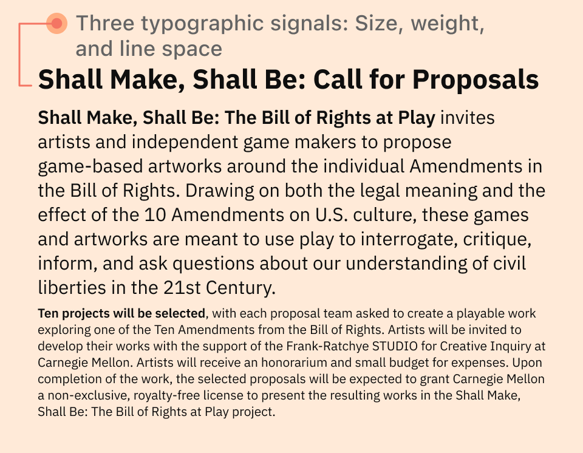
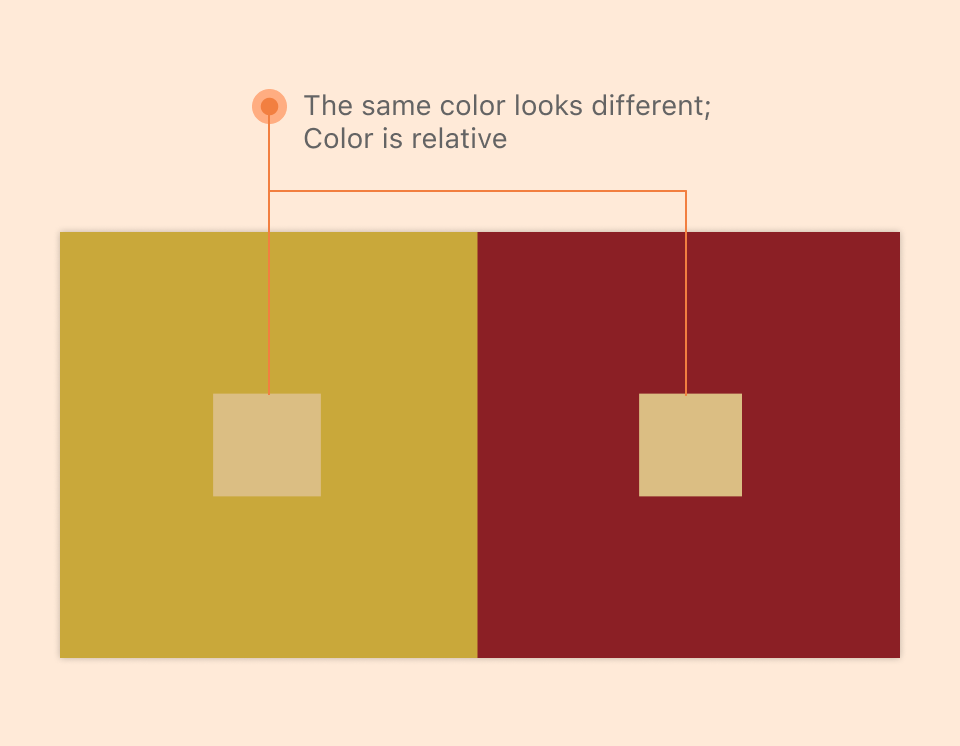
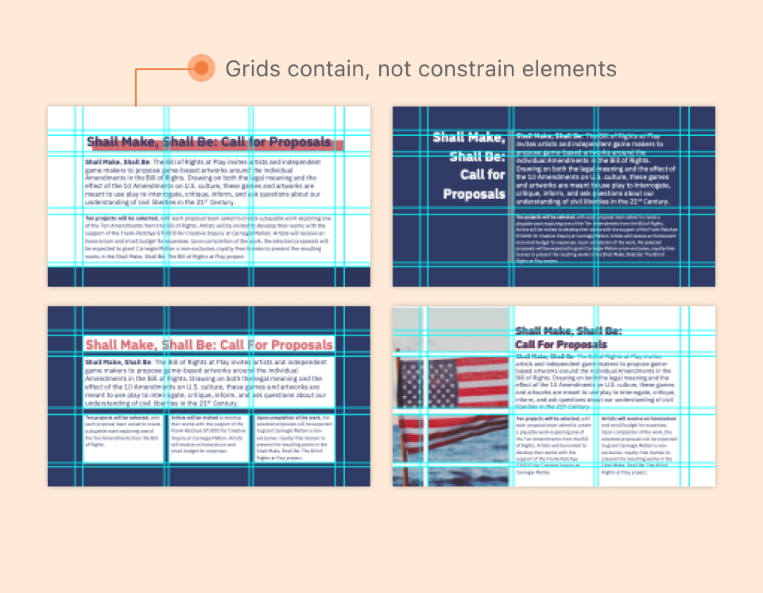
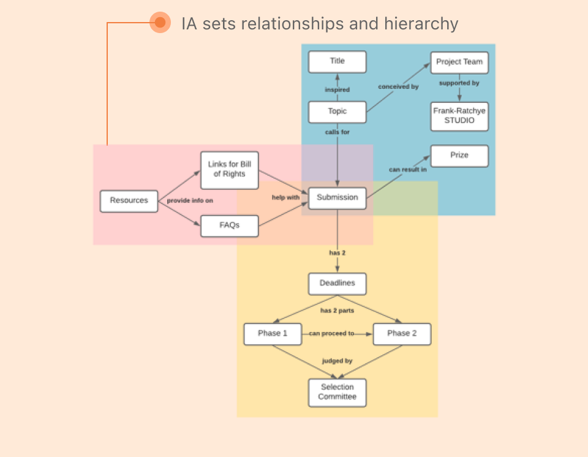
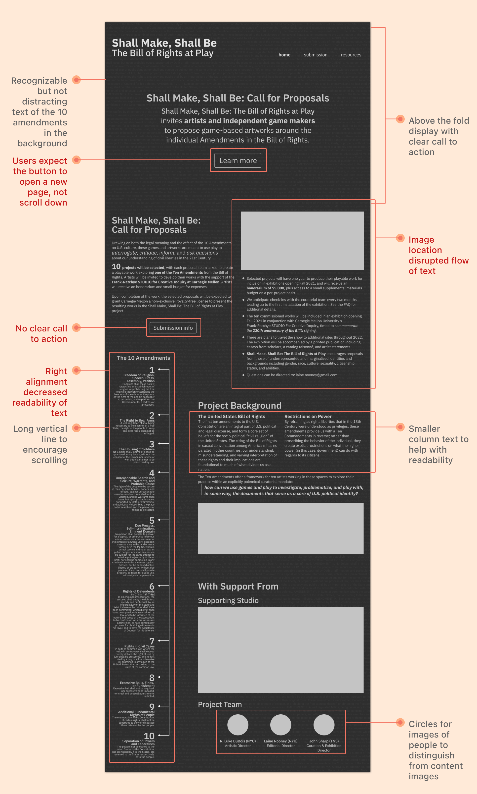
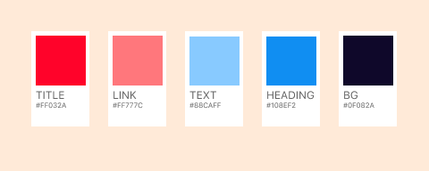
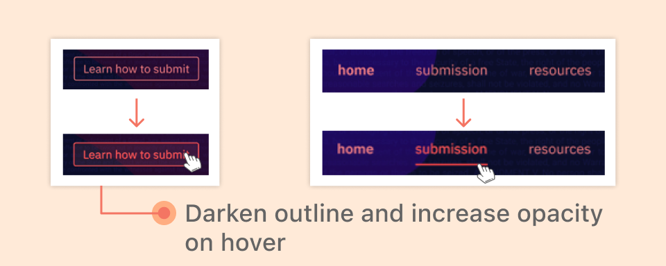

Other Projects
A redesign of a website calling for artists and gamemakers to submit game-based artworks
Problem
The current website needs to better appeal to artists and game-makers to submit proposals in line with the theme.
Insight
There needs to be intential use of grid, color, typography, and information architecture. All of these need to be tied together to the theme.
Outcome
An interactive prototype of a website redesign that creatively incorporates the 10 amendments to the game theme of the project proposal
Typographic Signals

Color Theory

Grid

Information Architecture (IA)

Med-Fidelity Prototype
Listed below are some design intentions and feedback from critique sessions on the home page

Color Palette

Interaction Design

Lessons Learned
In every step of the process, I learned something new that I could
apply to my future designs – type, grid, color, IA, wireframing, and
prototyping are all essential skills for a designer.
This fast-paced project pushed me to learn quickly and reimagine how
a theme can take any different forms. A combination I would've never
thought of (game and the 10 amendments) can come together cohesively
with research and intentional design.